Создайте свой Мурополис
- Стройте городРазмещайте уютные дома и мастерские, открывая новые возможности.
- Собирайте котиковЗнакомьтесь с жителями, их характером и занятиями.
- Рисуйте ландшафтДобавляйте дорожки, озёра, покрытия и необычные звёздные реки.
Уютная игра · Android
Постройте маленький город с большим мурчанием. Заселяйте котиков, открывайте новые здания, развивайте мастерские и рисуйте свой уютный мир — от дорожек и прудов до звёздных рек.
Котики · строительство · творчество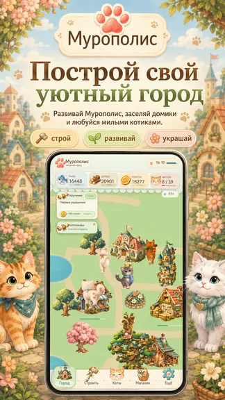
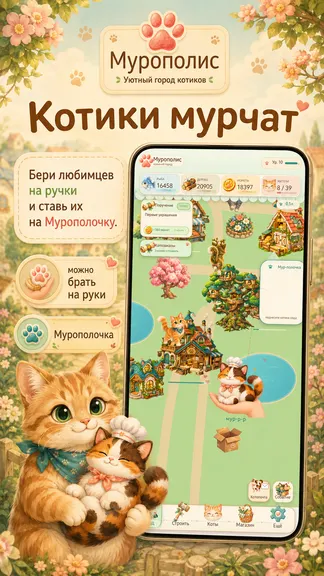
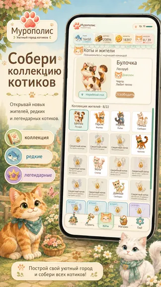
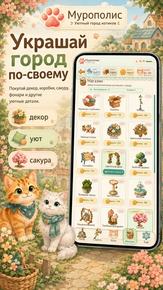
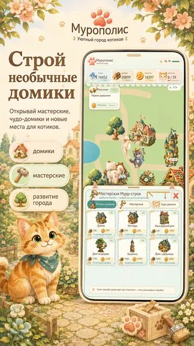
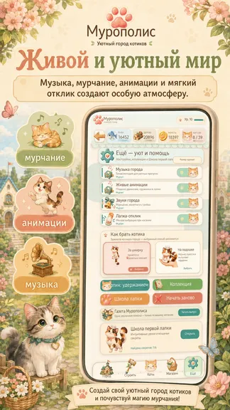
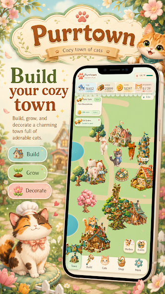
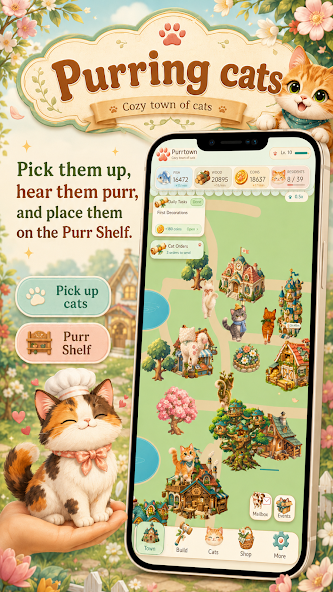
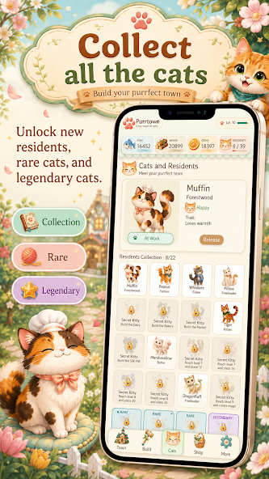
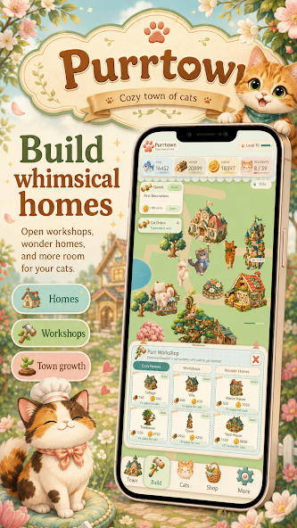
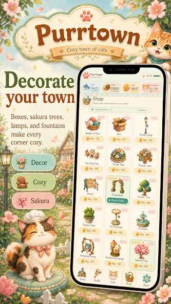
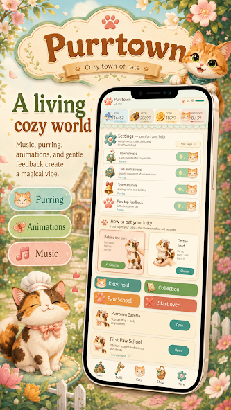
Для тех, кто любит котиков, спокойное строительство, коллекционирование персонажей и творческое оформление собственного мира.